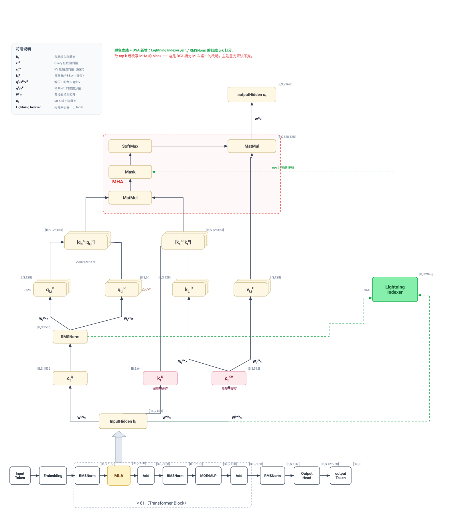

论文风格整体架构（参考 DeepSeek-V3.2 官方图重画）：底部为完整 Transformer 堆栈（×61），中部展开 MLA 的数学记号，顶部红框为 MHA 核心，右侧绿色为 DSA 新增的 Lightning Indexer。

[B, S, 128, 192]。
把张量想象成一个多维表格，方括号里每个数字就是它的一根"轴"（有多长）。下面把所有符号拆开讲。
| 符号 | 含义 | 直觉 |
|---|---|---|
B | batch size，一次同时处理几条序列 | 你一次喂给模型几段文本 |
S | 当前要计算的 query token 数 | 预填充阶段 = 整段输入长度；逐字生成阶段 = 1（只算新吐的那个字） |
T | 历史 KV 长度，已经见过的 token 数 | 模型要"回头看"的上下文多长，T ≥ S。稀疏注意力省的就是它 |
d | 模型隐藏维度（hidden size） | 每个 token 被表示成多长的向量（DeepSeek-V3 系列约 7168） |
MLA 的核心技巧是低秩压缩：先把高维向量压小再算，省显存、省 KV Cache。
| 符号 / 数字 | 含义 | 为什么是这样 |
|---|---|---|
Rq = q_lora_rank ≈ 1536 | Query 先被压缩到的中间维度 | 不直接从 d(7168) 生成 Query，先压到 1536，省参数 |
kv_lora_rank = 512 | KV 压缩后的"潜向量"长度 | MLA 的灵魂：KV Cache 每个 token 只存这 512 维，而不是完整 K、V |
qk_rope_head_dim = 64 | 每头里带 RoPE 位置编码的那小段 | RoPE 负责告诉模型 token 的先后顺序 |
qk_nope_head_dim = 128 | 每头里不带位置编码的那段 | 负责纯语义匹配 |
qk_head_dim = 192 | 每个注意力头 Q/K 的总长 = 128 + 64 | 两段拼起来（"解耦 RoPE"设计） |
v_head_dim = 128 | 每个头 Value 的长度 | |
| 主注意力头数 = 128 | 128 个"注意力头"并行看不同关注模式 | 128×192、128×256、128×128 里的 128 都是它 |
wq_b 输出 128×192 = 头数 × 每头Q维；
wkv_a 输出 512+64 = 压缩KV(512) + 一份所有头共享的 RoPE key(64)；
wkv_b 把 512 维解压成 128×256 = 128头 ×(K的128 + V的128)；
wo 输入 128×128 = 128头 × 每头V的128。
索引器是个"轻量筛选网络"，参数被故意做小以求快。
| 符号 / 数字 | 含义 | 为什么 |
|---|---|---|
| 索引头数 = 64 | 索引器只有 64 个头 | 只有主注意力(128)的一半，够用就行，越少越快 |
index_head_dim = 128 | 索引器每个头的维度（低维） | 只用来快速打分，不需要高精度 |
index_topk = 2048（即 k） | 每个 query 最终只挑 2048 个历史 token 参与真正的注意力 | 不管 T 多长（哪怕 128K），每个字只跟最相关的 2048 个算——这就是"稀疏" |
| 名字 | 是什么 |
|---|---|
qr | Query 的低秩表示（压缩版 Query）。索引器直接借用它，省一次投影 |
q_nope / q_pe | Query 拆成 无位置编码 / 带 RoPE 两部分 |
kv | 压缩后的 KV 潜向量(512维)，kv_cache 存的就是它 |
k_pe | 一份带 RoPE 的 key（所有头共享，64维） |
k_idx / q_idx | 索引器专用的 key / query，和主注意力完全分开、独立缓存 |
w_idx | 每个索引头的重要性权重（由 weights_proj 产生） |
index_score (I) | query 对每个历史 token 的"相关性打分" [B,S,T] |
topk_indices | 每个 query 选出的 2048 个最相关 token 的位置编号 |
index_mask | 把没被选中的位置设成 -inf 的掩码；加到分数上，softmax 后这些位置权重≈0，于是"只看被选中的 token" |
Mask 是 DSA 唯一改动基础 MLA 的地方：索引器算出的 Top-k 稀疏结果（绿色虚线），就通过改写这一步的掩码"注入"进原本的注意力（代码里即 scores += index_mask）。wkv_b 做"权重吸收"优化，Query 直接和压缩的 kv_cache 点积，维度略有不同但含义一致。